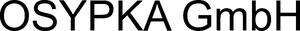

Trade Mark Journal No.2026/011 13 March 2026
WO0000001891122 (9,10,37,40,42)
Office of origin: Germany
Date of International Registration:26 September 2025
Date of designation in the UK:
26 September 2025

International priority date claimed: 7 April 2025
(Germany)
- Class 9
- Electrical and electronic apparatus and instruments for measuring, inputting, storing, displaying, analysing, processing, generating and transmitting of data and signals; monitors; data processing apparatus; computers; programs for computers; devices for the input, measurement, storage, display, analysis, processing, generation and transmission of data and signals; parts of the aforementioned goods and accessories therefor, insofar as included in this class.
- Class 10
- Medical apparatus and instruments; medical apparatus and instruments for use in interventional cardiology and paediatric cardiology; catheters; ablation catheters; diagnostic catheters; balloon catheters; cardiovascular catheters; medical implants; stents; temporary myocardial electrodes; cardiac wires; heart pacemakers; instruments for cardiac stimulation; electromedical electrodes; leads for pacemakers; cardiac arrhythmia control devices; cardiovascular instruments; implantable pacemakers; electronic stimulation apparatus for physiotherapy; physical therapy equipment; medical therapy instruments; electromedical and biomedical devices, instruments and apparatus; medical devices for use in the diagnosis and therapy of cardiac and circulatory functions; parts of the aforementioned goods and accessories therefor, insofar as included in this class.
- Class 37
- Cleaning and sterilisation services relating to medical products.
- Class 40
- Custom manufacture of medical devices for others; custom manufacture of medical devices, apparatus and instruments; custom manufacture of precision parts in the field of medical technology.
- Class 42
- Design and development of medical technology; design and development of computer software for use with medical technology; scientific and technological services in the field of medical technology; conducting technical tests in the field of medical technology; testing, analysis and evaluation of third-party medical devices, apparatus and instruments for certification purposes; testing of devices in the field of medical technology for certification; technical consultancy with relating to medical and electromedical equipment, in particular in the field of diagnostics and therapy of cardiac and circulatory functions; conducting research and development in the field of medical devices, apparatus and instruments; development and creation of computer software; development and creation of programmes for data processing.
OSYPKA AG
Representative: Maucher Jenkins Patentanwälte & Rechtsanwälte, Urachstraße 23, 79102 Freiburg, GERMANY